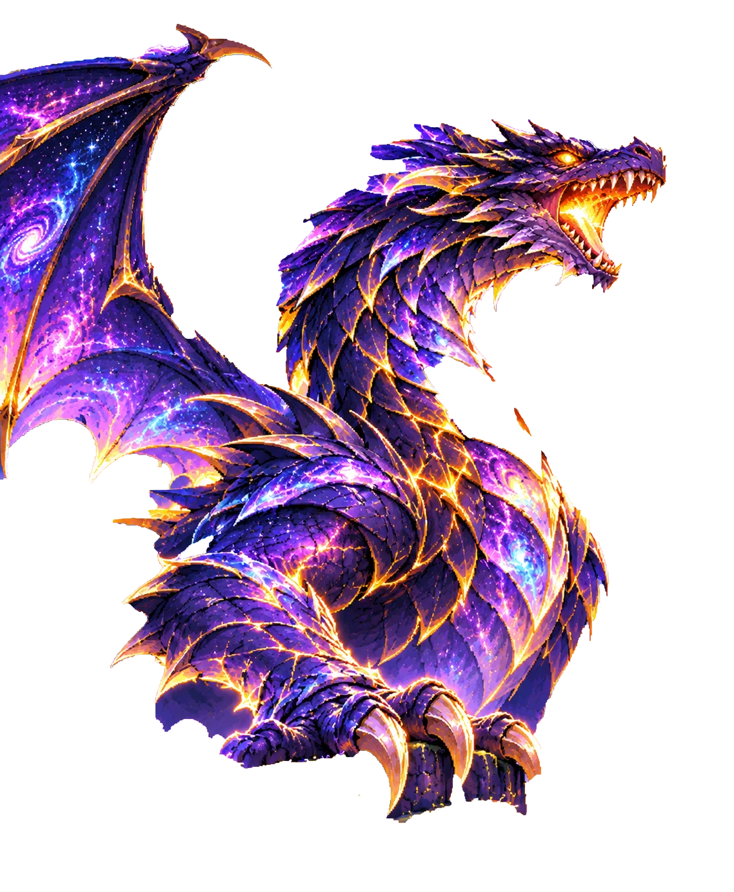

Chroniques des ArcanesHOLO · V4 TEST



Vyrath, Fléau Céleste
Créature · Légendaire
Un dragon dont le rugissement ébranle les étoiles.
✧ AETHERIUM ✧


Un dragon dont le rugissement ébranle les étoiles.
V4 · expérience 3D sur la carte d’origine, sans modifier ta collection.
Test V4 : les ailes, le torse, la tête et les griffes réagissent à quatre profondeurs différentes grâce à un rendu WebGL. Le décor original reste parfaitement fixe et les déplacements sont contenus dans la silhouette, sans décrochage du paysage.
PC : déplacez le curseur sur la carte. Mobile / tablette : glissez le doigt ; si votre appareil l'autorise, activez ses capteurs d'inclinaison avec le bouton. Les réglages sont temporaires et n'affectent pas vos sauvegardes.